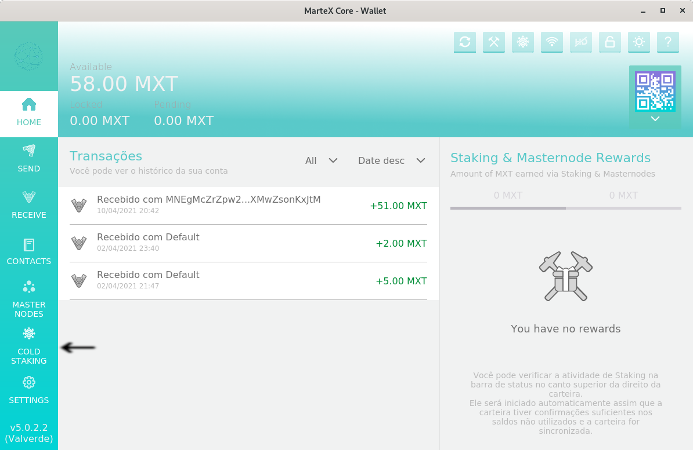
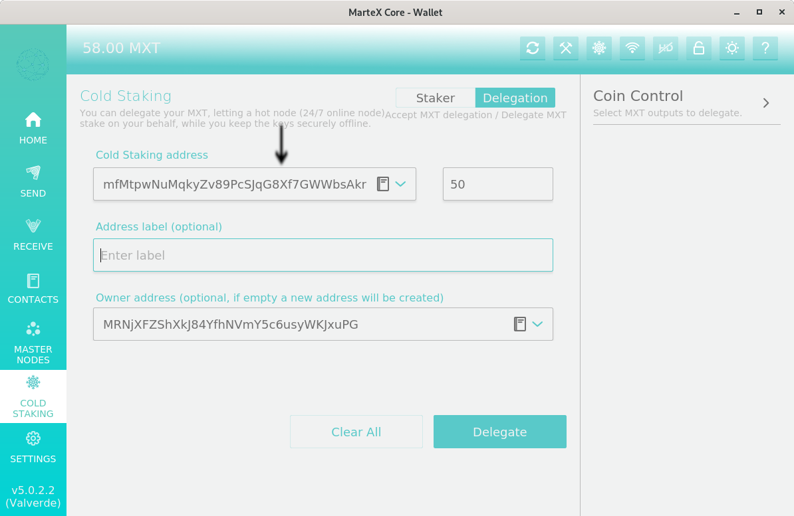
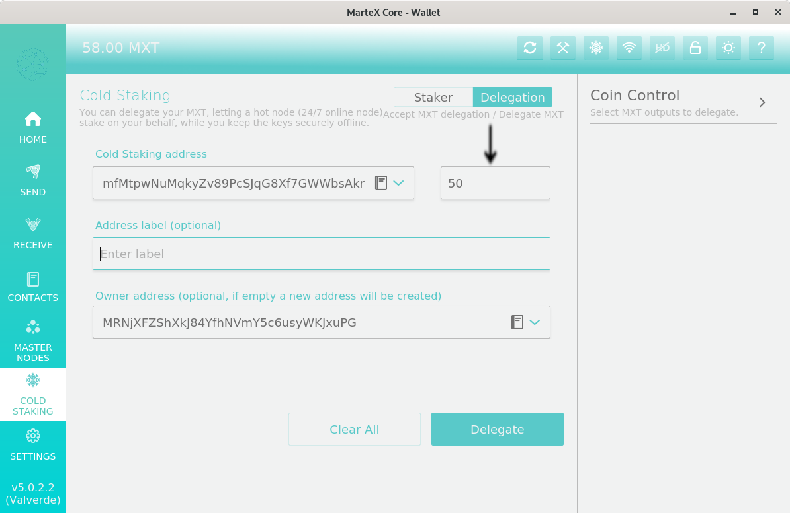
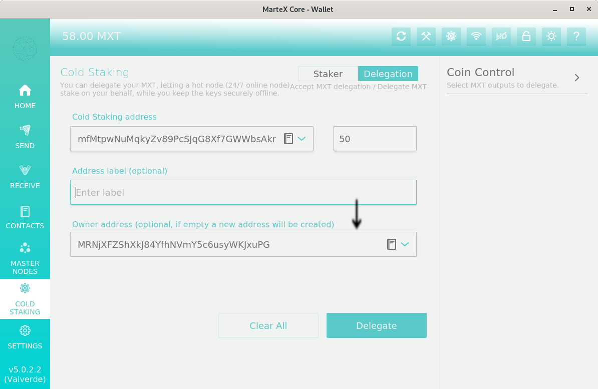
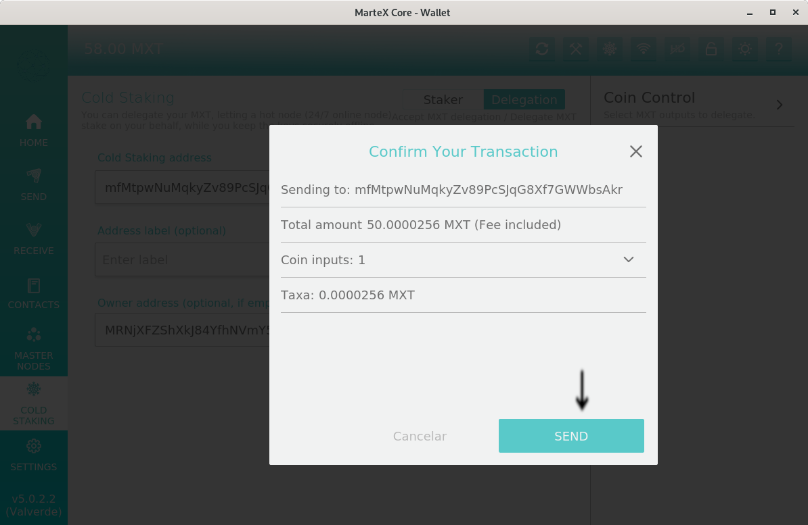

ColdStake guide
Traditionally, in a bet-proof consensus algorithm, block producers are required to keep private keys for the currencies wagered on us online. The reason is twofold.
Whenever a valid kernel entry is found, the corresponding UTXO is used as an entry for the coinstake transaction and, therefore, your private key is required to produce the transaction signature.
After the block is mounted, it must be signed with the same private key.called Blockchain. Buy selling from anywhere in the world quickly, easily and cheaply without going through a central authority, and get rewarded for using MarteXcoin.
Even if the wallet software has password protection that allows the use of private keys “only for stakeout”, the wallet still needs to be decrypted, which leaves it subject to various types of attacks on compromised systems. Large token holders may find that the reward for betting is not worth the risk described above, resulting in less participation in the block creation process, which reduces the overall security of the network (since it is proportional to the number of coins bet).
With “Cold Staking”, block producers still need to maintain a node online, but the private keys for the currencies bet can be safely stored offline. This is achieved by signing a special transaction “contract” that transfers the betting rights of the currency, without transferring ownership of the currency. Cold staking allows a person to delegate their Staking power to another wallet, but one that is not connected to the Internet to keep coins safe and secure in an offline wallet. At the same time, an empty online wallet is connected to the offline wallet and receives rewards for doing so. This empty wallet can be online 24 hours a day, 7 days a week, without risking being hacked.
As keeping a wallet up and running all the time is not suitable for most people, whether due to the cost of running the computer all day or a bad internet connection, this is done through a VPS (virtual private server), which is rented. Because running a wallet on a rented VPS increases the risk of coins being lost or hacked, cold staking can attach an empty wallet to a VPS to earn rewards for them, while keeping their coins safe in an offline wallet, also known like a cold wallet.
There are advantages and disadvantages to this approach. For example, if the interested party takes their coins out of cold storage, they will not receive the rewards. But it is useful for stakeholders with a large sum of money who want to ensure the protection of their funds while supporting the network.
The MarteXcoin Team has prepared its own server that is online 24 hours a day, 7 days a week, so that MarteXcoin users can carry out their Stakings.
The MarteXcoin Cold Staking feature is very easy to set up, just follow the tutorial below.
Our cold staking address
mfMtpwNuMqkyZv89PcSJqG8Xf7GWWbsAkr
1 - The first step to configure your Cold staking MarteXcoin is to enable Cold Staking by clicking on the snowflake as shown in the image below.
2 - Once the Cold staking function is enabled; click on the Cold Staking button as shown in the image below.

3 - Conform the image below, copy and paste our ColdStaking address.

4 - As shown in the image below, enter the amount greater than 100 MarteXcoin that you want to make available to ColdStaking.

5 - As shown in the image below, enter your address that will receive the coins generated by ColdStaking.

5.1 - As shown in the image below, click delegate.
6 - Now click on send and receive your bet reward even with the computer turned off, like this, saving time and helping to reduce the planet’s electrical cost.
